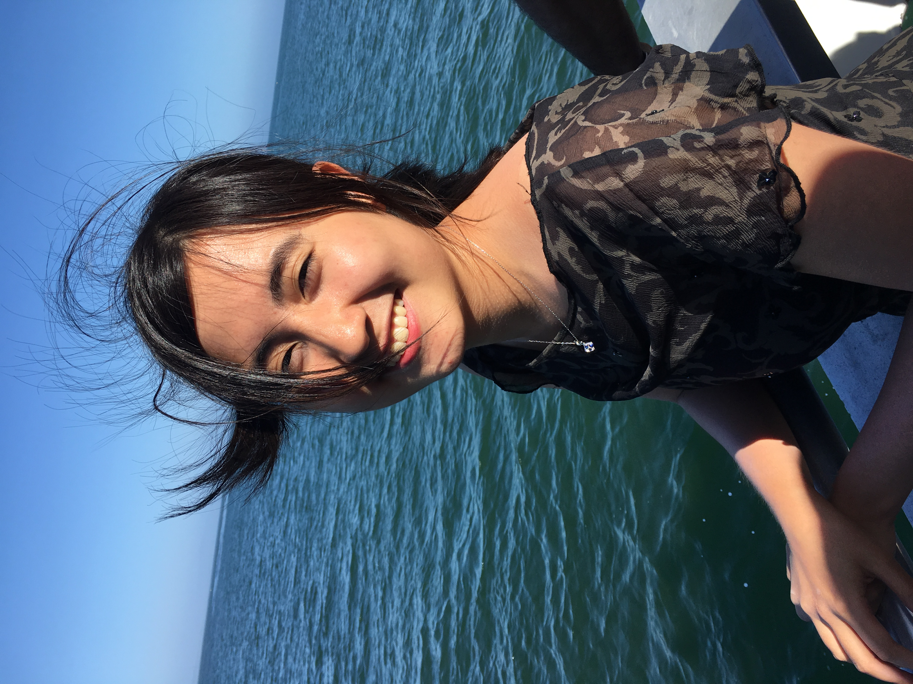

 I love to build meaningful projects with software engineering. This past summer, I worked at Google Shopping and took on a 20% project with Google for Education. In the past, I have developed edtech platforms across Taiwan, China, and Brazil, created a college application guide, and tinkered with various technologies ranging from chatbots, human intelligent robots, to app development.
As the President of the Brown Data Science Club, I organized the annual Brown Datathon and coordinated the neuroscience datathon. I am also leading the Open Source Initiative at Brown.
I study computer science and applied math at Brown University. I am also trying to understand how human thinks and how the world works.
I love to travel and meet new people. Feel free to reach out via Email, Twitter, or LinkedIn.*
In my spare time, I am always reading (mostly nonfiction) on Kindle and Blinkist. My top 3: When Breath Becomes Air; Thank You For Being Late; Never Eat Alone. In Progress: Origin by Dan Brown. Waitlist: The 4-hour chef (as I’m always excited about food). Sometimes I share my thoughts online too.